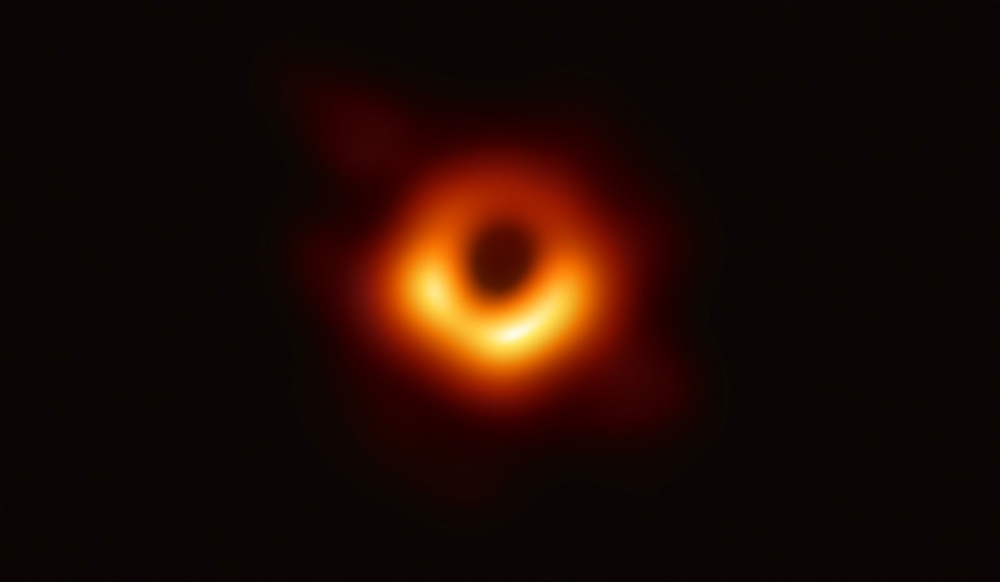

Étoile Polaire
L'étoile polaire sert à indiquer le Nord aux astronomes et aux navigateurs depuis bien longtemps. Mais qu'a-t-elle de vraiment particulier ? Comment la repérer dans le ciel nocturne ?
L'étoile polaire sert à indiquer le Nord aux astronomes et aux navigateurs depuis bien longtemps. Mais qu'a-t-elle de vraiment particulier ? Comment la repérer dans le ciel nocturne ?

Les pulsars sont des étoiles à neutrons qui tournent très vite sur elle-même. On en dénombre environ 400 et leur période de rotation varie de 0,01 à 4 secondes !

La galette des rois est une tradition qui remonte à des décennies. Traditionnellement, elle se partage 12 jours après Noël chaque année. A l’origine et dans la plus grande partie de la France, la galette des rois est composée d’une pâte feuilletée fourrée de frangipane et contenant une fève. Je ne vous apprends rien ici mais saviez-vous qu’il existe d’autres formes de galettes ?

Le ministère de la Culture fait de la résistance.

Le jazz reprend du poil de la bête, entre les clubs de jazz de Saint-Germain, les nouvelles scènes et les bars d'hôtels. Passage en revue du phénomène.

La musique, un art unique et indispensable à l'apprentissage
Le chardonneret élégant est un oiseau de l’ordre des passériformes, de la famille des fringillidés, passereaux de petite à moyenne taille. C’est l’un des oiseaux au plumage le plus coloré que l’on peut apercevoir dans nos jardins. Son chant mélodieux est très reconnaissable.
Le Geai des chênes est un grand passereau de la famille des corvidés. C’est un joli oiseau au plumage paré de couleurs vives plutôt discret et timide. Le Geai des chênes est très répandu en France. Très friand de glands de chênes qu’il stocke abondamment en automne, le Geai des chênes contribue à favoriser l’expansion de cet arbre grâce aux très nombreux glands cachés qu’il ne mange pas et qui finissent par germer et donner de nouvelles pousses.